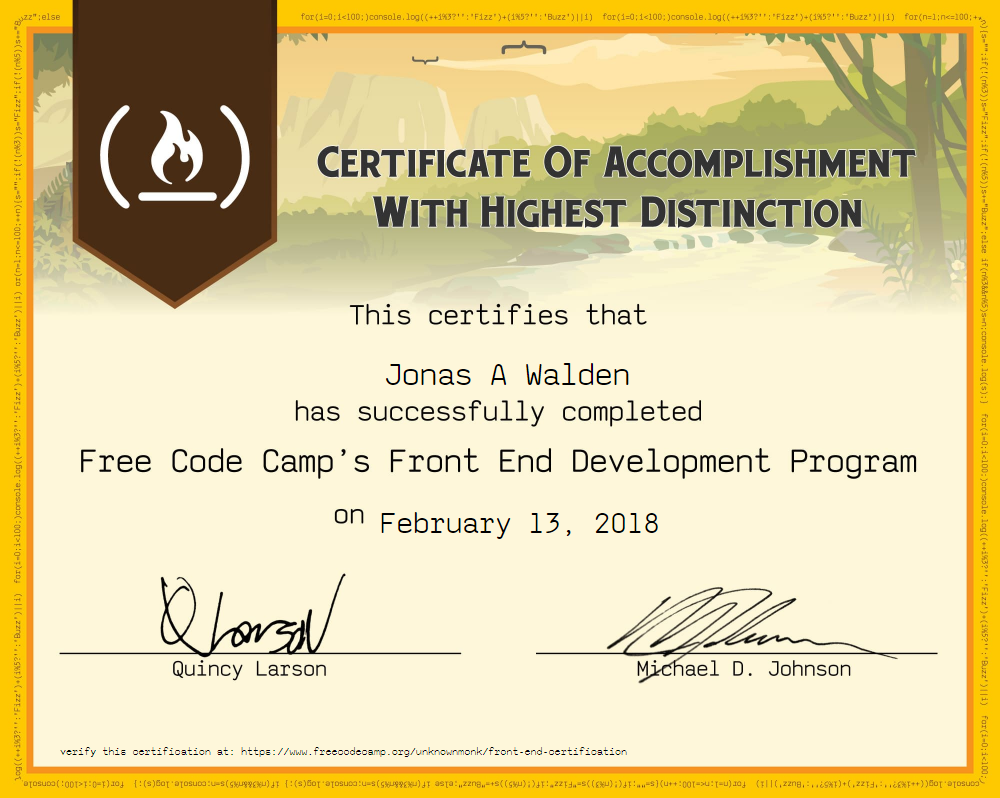

<div style="margin-left: 50px;
    font-size: 40px;
    font: bold;
margin: 0 auto;
    margin-top: 100px;
    height: 1000px;
    width: 1000px;">
    
    <p>Front end developer certification 400 corse hours of study. It took me roughly 7 months to compleat this course. It covers compleat fornt development with several projects in Html 5, Css 3 and Vinilla JavaScript also algorithms projects . Not easy
        task to get this puppy!</p>
</div>